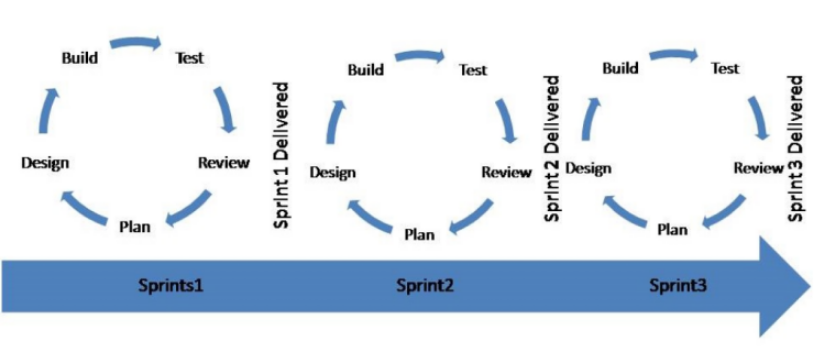
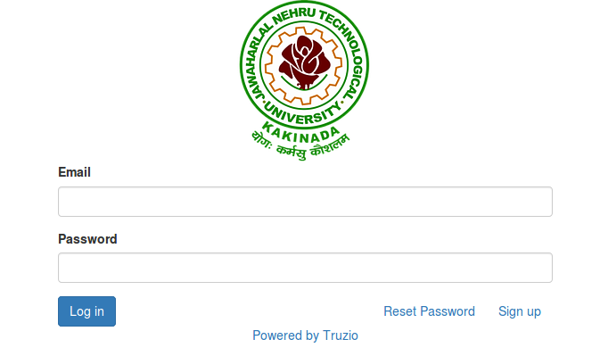

subject Line:
The education ERP project for automation of the Jawaharlal Nehru Technological University kakinada(JNTUK) aimed to automate convesional process of Accounting and Examination of Affiliated colleges of around 200+.
Education system forms a backbone of every nation. And hence it is important to provide a strong educational foundation for the young generation to ensure the development of open-minded global citizens securing the future for everyone. Advanced technologies that available today plays a crucial role in streaming education related processes to promote solidarity among students, faculty, parents and the staff.
In recent years higher education has been strongly influenced by global trends, especially as a result of the call by governments for universities worldwide to improve their performance and efficiency. Rising stakeholder’s expectations (particularly students and governments), quality and performance requirements, competitive education environments along with decreasing governmental support have pressured universities worldwide to adopt new strategies in order to improve their performance. Consequently, the higher education sector has turned to Enterprise Resource Planning (ERP) systems in the hope of helping them to cope with the changing environment. As a result, existing management and administration computer systems have been replaced by ERP in these institutions to achieve more efficiency and accessibility for all members and improve end-user’s performance by providing better managerial tools. The primary goal is to integrate all the education departments along with all Colleges of University from different domains through a single interface under a secured digital environment with effective cybersecurity measures.
Proposed System Now the Educational ERP system computerizes all the details that are maintained manually. Once the details are feed into the system there is no need for various persons to deal with separate sections. Then, a single person is enough to maintain all the reports and records. The security can also be given as per the user requirement. It has the following benefits:
Architecture of Education ERP
Agile software development methodFor this project we adopt the agile Methodology,
Agile software development methods support a broad range of the software development lifecycle. Some focus on the practices while some focus on managing the flow of work (e.g., Scrum, Kanban). Some support the activities for requirements specification and development, while some seek to cover the full development life cycle.
Agile software development is supported by a number of concrete practices, covering areas like requirements, design, modeling, coding, testing, planning, risk management, process, quality, etc. An Agile Method is a particular approach to project management that is utilized in software development. This method assists teams in responding to the unpredictability of constructing software. It uses incremental, iterative work sequences that are commonly known as sprints.
Agile Methodology
In adoption of agile Methodology we design the sprint Plan,The sprint planning session is one of the key activities to ensure a successful execution of your agile projects. If it’s done correctly, it will help ensure you have the commitment and buy-in from each team member to deliver the content to the best of their ability. The sprint planning session is a collaborative meeting in which the team estimates the size of user stories, breaks down stories into tasks and commits to deliver the stories during a sprint as per the pre-determined and agreed upon “definition of done”.
As a Successful completions of some modules, The first page of the project,
Login Page